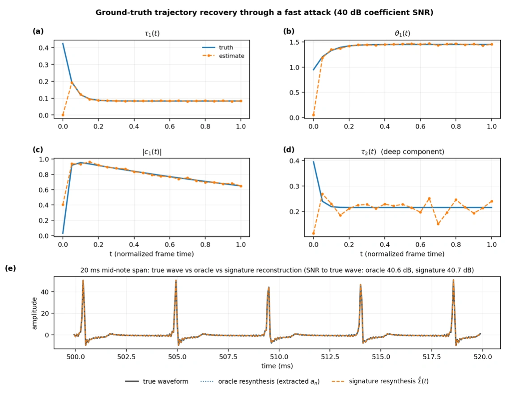
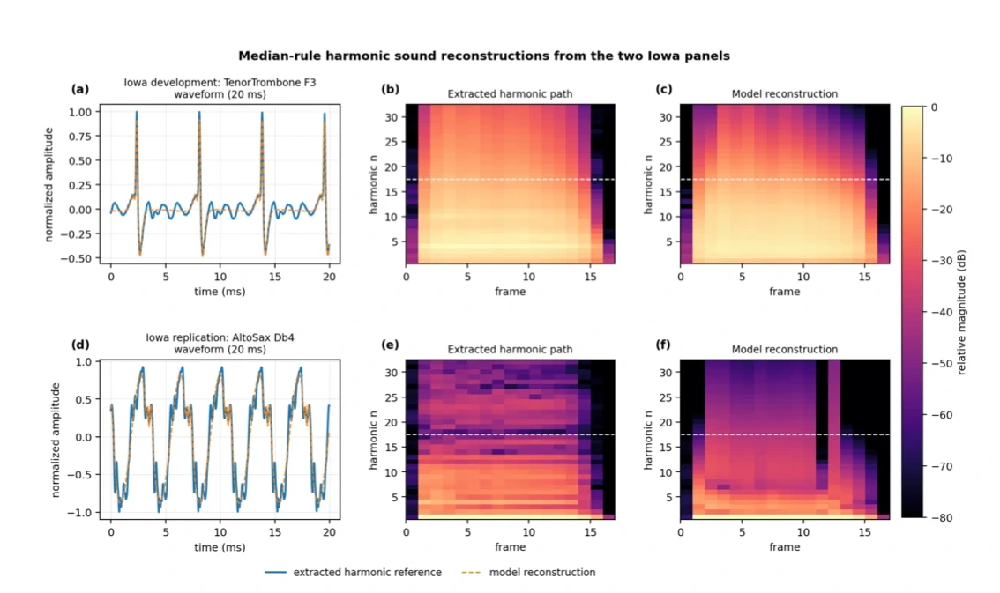
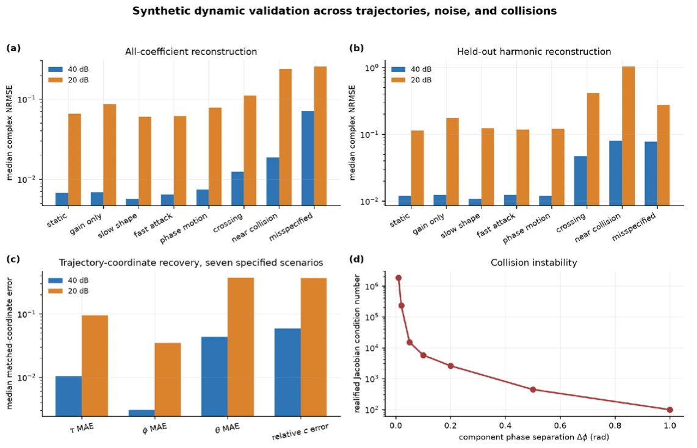

Music timbre modelling

A compact model of harmonics
A trombone and a saxophone can play the same note yet sound different because their overtones have different strengths and phases. Recording every overtone independently takes many values, especially when the sound changes from the attack to the decay. I developed a more compact description using complex singularity atoms, mathematical components that capture a related pattern across several harmonics at once.
Each atom has parameters controlling how quickly higher harmonics weaken and how their waves align. Rather than fit every value separately, I used a matrix-pencil initialiser for suitable integer-type components and variable projection, which solves the component strengths by linear least squares before adjusting the nonlinear shapes. That reduces the nonlinear search from five to three unknowns per component, making the model easier to fit without discarding the relationship between harmonics. The derivation appears in my mathematics paper.

Reconstruction and prediction
Allowing the atom parameters to change over time made it possible to follow how a note begins and fades. I tested reconstruction on 72 isolated tones from the University of Iowa instrument recordings, comparing the resulting harmonic spectra with the original measurements.
Using 170 model values instead of 1,088 direct coefficient values—about 84% fewer—the representation retained 93.6% of harmonic coefficient energy, with normalised complex reconstruction error of 0.253. In separate synthetic tests, I fitted the first 24 harmonics and predicted the next 24, obtaining 1.5% median relative error on the withheld harmonics.

Parameter identifiability
A compact fit is only useful if its parameters can actually be determined from the recorded sound. I derived identifiability conditions for when the harmonics determine the atoms apart from equivalent reorderings, then examined the coefficient-map Jacobian to see how small changes in atom parameters affect the predicted spectrum. The same fitted parameters can also be used to calculate quantities such as spectral centroid, the energy-weighted average frequency, without reconstructing every harmonic separately.